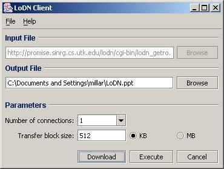
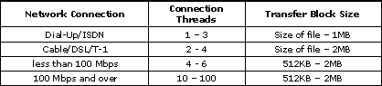
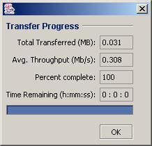

Figure 1: The LoDN
Download Client interface.

Please note: Figures 1 and 3 depict the LoDN Download Client
interface for Windows. However, the download client interface for Mac or Unix
operating systems are substantially identical to the version pictured.
The box labeled "Input File" will already be filled in with the content key for the file to be downloaded.
Enter a file path in the box labeled "Output File," or click Browse to choose a location and file name for the downloaded content.
After selecting desired values for the download parameters, click either the Download or Execute button to begin downloading. Download simply retrieves the file, while Execute retrieves the file and then automatically opens the downloaded file. Use the Execute button only when you trust the file content, as Execute does not differentiate between legitimate file content and harmful content such as a virus.
When the download begins, the "Transfer Progress"
window (Fig. 3) will appear and display the status of
the download. When the download is complete, click OK to close the Transfer
Progress window. To exit LoDN, close the download client window.
"Number of connections" refers to the maximum number of data transfer operations to be performed concurrently during download. Each connection, or "thread," is an individual transfer stream, retrieving a separate block of data. Maximizing download performance is a matter of balancing the number of connection threads with available bandwidth. Using more connection threads usually means faster performance, provided that sufficient bandwidth is available. For transfers within a local area network, four to six threads are recommended. For transfers over public wide area networks, use one to two threads for TCP friendliness. For transfers over dedicated high-speed links, as between research facilities, try using ten or more threads for maximum performance. See Figure 2 for further suggestions. You may choose a number from the drop down menu, or overwrite the menu box with a positive integer.
During download, each connection thread retrieves one incremental block of data at a time; the "transfer block size" indicates a preferred size for this download increment. Choose a small block size for retrieving small files or downloading over a slower connection, and a large block size for larger files or faster connections. See Figure 2 for suggested settings. When downloading small files (a few hundred KB or less) over a slow connection you may have best results choosing a block size on the order of the filesize. If you are unsure of the file size or your connection speed, try a transfer block size of 512 KB. Choose a transfer block size by entering a positive integer in the box provided and using the radio buttons to select units of kilobytes (KB) or megabytes (MB).
Figure 2: Suggested
values for download parameters.

Note: Mbps is megabits per second. To convert to MBps (megabytes
per second), divide Mbps by 8.
After selecting desired values for the download parameters, click either the Download or Execute button to begin downloading. Download simply retrieves the file, while Execute retrieves the file and then automatically opens the downloaded file or runs the downloaded application. Use the Execute button only when you trust the file content, as Execute does not differentiate between legitimate file content and harmful content such as a virus.
When the download begins, the "Transfer Progress"
window (Fig. 3) will appear and display the status of the download. When the
download is complete, click OK to close the Transfer Progress window.
To exit LoDN, close the download client window.
Figure 3: The Transfer
Progress window.

From the menu bar at the top left of the download client window (Fig. 1) you may access the "File" and "Help" menus. Options for these menus are listed below:
The "File->Open" command allows you to browse for an input file. This option is only available when using the download client in stand-alone mode.
The "File->Download" command is equivalent to clicking the Download button, located at the bottom of the client window. The Download command starts the file transfer.
"File->Exit" closes the Download Client window.
"Help->Contents" opens the browsable LoDN help files.
"Help->About" displays information about the LoDN Download Client application.